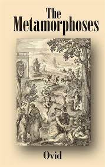

The Odyssey
Homer

Embark on an epic adventure of heroism, courage, and the human spirit with "The Odyssey." Homer's timeless masterpiece takes readers on a journey through ancient Greece, following the struggles and triumphs of the hero Odysseus as he seeks to return home after the Trojan War. This epic poem not only showcases the rich tapestry of Greek mythology but also explores themes of perseverance, loyalty, and the pursuit of personal identity. "The Odyssey" is a captivating literary work that offers profound insights into the human condition and continues to resonate with readers across generations.
The Iliad
Homer
Immerse yourself in the thrilling tale of war, honor, and destiny with "The Iliad." Homer's epic poem transports readers to the Trojan War, where legendary heroes clash on the battlefield and gods intervene in mortal affairs. This timeless work explores profound themes of heroism, fate, and the consequences of human actions. Through vivid storytelling and memorable characters, "The Iliad" captivates readers and offers a window into the ancient world while shedding light on timeless questions of honor, sacrifice, and the human experience.
The Epic of Gilgamesh
Anonymous
Step into the realm of ancient Mesopotamia and embark on a legendary quest with "The Epic of Gilgamesh." This ancient Sumerian poem follows the adventures of Gilgamesh, a heroic king in search of immortality. Beyond its thrilling narrative, this epic explores themes of friendship, mortality, and the meaning of life. As one of the earliest known works of literature, "The Epic of Gilgamesh" provides a fascinating glimpse into the beliefs, values, and cultural heritage of one of the world's oldest civilizations.
Norse Mythology
Neil Gaiman
Delve into the rich tapestry of Norse mythology with "Norse Mythology" by Neil Gaiman. This captivating retelling brings to life the gods, goddesses, and mythical creatures of Norse folklore, including Odin, Thor, and Loki. Gaiman's masterful storytelling captures the essence of these ancient tales, revealing the intricate web of relationships, conflicts, and adventures that define Norse mythology. "Norse Mythology" offers a captivating journey into a world of gods, giants, and fantastical realms, providing a deeper appreciation for the myths that have shaped Northern European culture.
D'Aulaires' Book of Greek Myths
Ingri d'Aulaire and Edgar Parin d'Aulaire
Immerse yourself in the captivating world of Greek mythology with "D'Aulaires' Book of Greek Myths." This beautifully illustrated collection brings to life the timeless tales of gods, goddesses, heroes, and monsters from ancient Greece. With enchanting storytelling and vibrant artwork, this book offers a delightful introduction to Greek mythology, igniting the imaginations of readers young and old. Discover the stories of Zeus, Athena, Hercules, and others, and delve into the fascinating world of ancient Greek civilization.
Bulfinch's Mythology
Thomas Bulfinch
Journey through the realms of Greek, Roman, and Norse mythology with "Bulfinch's Mythology." This classic compendium brings together a wealth of mythological stories and legends, providing a comprehensive overview of the world's most influential mythological traditions. From the heroic deeds of Hercules to the adventures of the Trojan War, this book presents a treasure trove of timeless tales that have shaped Western literature, art, and culture. "Bulfinch's Mythology" is a must-read for anyone seeking a deeper understanding of the enduring power and significance of mythology.
The Prose Edda
Snorri Sturluson

Explore the rich mythological heritage of the Norse gods and heroes with "The Prose Edda" by Snorri Sturluson. This ancient Icelandic text serves as a key source for Norse mythology, providing a comprehensive account of the creation of the world, the lives of the gods, and the heroic adventures of legendary figures like Thor and Odin. "The Prose Edda" offers a fascinating glimpse into the worldview and cultural beliefs of the Norse people, making it an essential read for those intrigued by the tales and traditions of the Vikings.
Metamorphoses
Ovid
Embark on a captivating journey through Greek and Roman mythology with "Metamorphoses" by Ovid. This epic poem explores the transformative power of love and the countless myths of gods, goddesses, and mortals. Through its vivid storytelling and rich imagery, "Metamorphoses" weaves together tales of gods transforming humans, humans transforming into animals, and the interplay between mortal and divine realms. Ovid's masterpiece is a literary treasure that continues to inspire and enchant readers with its timeless tales of passion, betrayal, and metamorphosis.
The Hero with a Thousand Faces
Joseph Campbell
Uncover the universal patterns and archetypes that underlie the world's mythologies with "The Hero with a Thousand Faces." Joseph Campbell's seminal work explores the concept of the hero's journey—a narrative structure that transcends cultural boundaries and speaks to the depths of the human psyche. By examining myths and legends from various cultures, Campbell reveals the transformative power of storytelling and the archetypal themes that resonate across time and civilizations.
The Masks of God
Joseph Campbel
Embark on a comprehensive exploration of mythology and its role in shaping human culture with "The Masks of God" series by Joseph Campbell. Spanning four volumes—Primitive Mythology, Oriental Mythology, Occidental Mythology, and Creative Mythology—this landmark work offers a deep dive into the mythological traditions of diverse civilizations throughout history. Campbell's insightful analysis reveals the common threads that connect